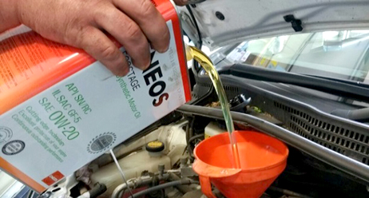

Иллюстрация услуги · не фото бизнесаJX Nippon · CC BY-SA 4.0 · без изменений
01 / УслугиЗамена масла
Уточняйте стоимость
Операция указана в рубриках карточки 2ГИС; состав работ и цена не раскрыты
Источник цены и услуги ↗Услуги и цены
По опубликованным источникам.
Даты обновления и условия указаны у услуг.

Иллюстрация услуги · не фото бизнесаJX Nippon · CC BY-SA 4.0 · без изменений
01 / УслугиУточняйте стоимость
Операция указана в рубриках карточки 2ГИС; состав работ и цена не раскрыты
Источник цены и услуги ↗